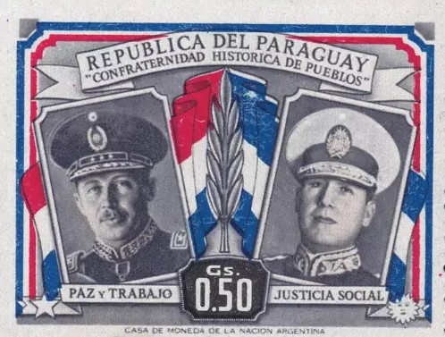

A42-POL-036 // HISTORICAL CLAIM REVIEW
Paraguay's 1954 Coup and Stroessner's Rise
Assessment: Stroessner's takeover was an established domestic coup followed by a long authoritarian regime.


The precise allegation
General Alfredo Stroessner seized power in Paraguay in 1954, overthrowing President Federico Chávez after an internal Colorado Party and military crisis. The coup was a domestic conspiracy. US records show diplomatic engagement and anti-communist alignment, but public evidence does not establish that Washington planned the takeover; later support for Stroessner is clearer than prior operational control.
Chronology and political context
Chávez's government faced a factional struggle within the ruling Colorado Party and disputes over military leadership. Stroessner forced Chávez out in May 1954, then won a tightly controlled election. His dictatorship endured until 1989. The US recognized and supported the new regime within a regional Cold War context, while opposition and political repression expanded.
Primary historical record
Paraguayan political records are sparse, but diplomatic cables, party histories, and later truth commission materials document the change of power and repression. The US National Archives and State Department files show recognition and relations; they are not a complete account of internal military planning. Official Paraguayan narratives under the dictatorship were heavily controlled.
Corroboration and contrary evidence
Historians identify internal military and party rivalries as central to the coup. Human-rights documentation confirms repression under Stroessner, and US diplomatic records demonstrate sustained engagement. Claims of direct CIA orchestration circulate but lack the kind of operational documents available for Iran or Guatemala; foreign alignment should not be substituted for proof of prior command.
What remains uncertain
The exact sequence of negotiations among Colorado factions and officers, as well as the extent of foreign foreknowledge, remains difficult to reconstruct. Archives were politicized and opposition records were often destroyed. The coup's later consolidation was not inevitable at the moment of Chávez's removal.
Calibrated verdict
Stroessner's takeover was an established domestic coup followed by a long authoritarian regime. US support and diplomatic accommodation during the dictatorship are documented, but direct US authorship of the 1954 operation is not established. The case should be distinguished from better-documented CIA coup operations rather than forced into the same model.
What evidence could change this assessment
Release of Paraguayan military files, CIA operational records, or contemporaneous communications between US officials and coup leaders could change the foreign-role assessment. Independently corroborated evidence of US tasking would support a stronger claim; records showing only post-coup recognition would reinforce the distinction between support and orchestration.
Sources and source limits
- Paraguay Truth and Justice Commission — Final ReportTruth commission materials document dictatorship-era abuses; public access and digitization vary, and the mandate was not solely coup attribution.
- U.S. Department of State — FRUS Latin America, 1952–1954Diplomatic records provide US policy context; absence of an operational document is not proof no covert action occurred.
- Encyclopaedia Britannica — Alfredo StroessnerBiographical overview of Stroessner's rise and rule; tertiary summary with limited treatment of coup networks.